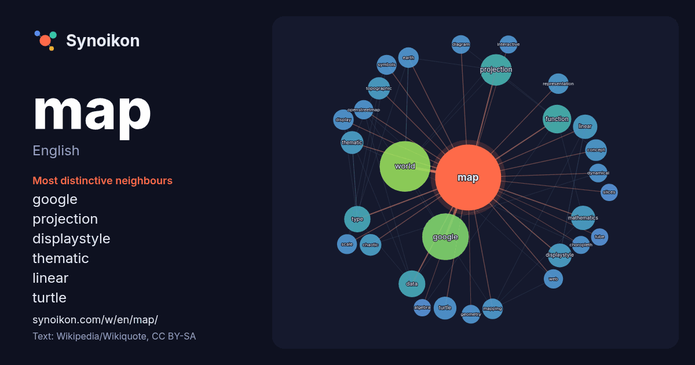

English · word of the day list
map
The words found around it in 1853 instances from English Wikipedia, Wikiquote and Hacker News.

Most distinctive neighbours
- google 78×
- projection 38×
- displaystyle 24×
- thematic 21×
- linear 21×
- turtle 21×
- topographic 21×
- mathematics 20×
- chaotic 19×
- function 17×
- mapping 17×
- openstreetmap 16×
- dynamical 15×
- data 15×
- diagram 14×
- choropleth 14×
- world 14×
- representation 14×
- geometry 14×
- symbols 13×
× = how many times more often than in general English Wikipedia text.
Most frequent neighbours
- world 104
- google 88
- projection 40
- function 33
- data 29
- type 28
- system 25
- linear 24
- mathematics 24
- displaystyle 23
- area 22
- city 22
- show 22
- thematic 21
- turtle 21
- topographic 20
- chaotic 19
- chart 19
- concept 19
- point 19
In context
- In cartography, a map is a representation or abstraction of geographic reality. Maps are used for a wide range of purposes, including navigation, scientific Wikipedia snippets · Map
- MAP, map, or physical map in . A map is a symbolic visual representation of an area. Map or MAP may also refer to: Map Wikipedia snippets · Map (disambiguation)
- world map is a map of most or all of the surface of Earth. World maps, because of their scale, must deal with the problem of projection. Maps rendered Wikipedia snippets · World map
- Google Maps is a web mapping platform and consumer application developed by Google. It offers satellite imagery, aerial photography, street maps, 360° Wikipedia snippets · Google Maps
- A site map or sitemap is a list of pages of a web site within a domain. There are three primary kinds of sitemap: Sitemaps used during the planning of Wikipedia snippets · Site map
- In mathematics, a canonical map, also called a natural map, is a map or morphism between objects that arises naturally from the definition or the construction Wikipedia snippets · Canonical map
- In modern mapping, a topographic map or topographic sheet is a type of map characterized by large-scale detail and quantitative representation of relief Wikipedia snippets · Topographic map
- A mind map is a diagram used to visually organize information into a hierarchy, showing relationships among pieces of the whole. It is often based on Wikipedia snippets · Mind map
More English words
- art
- autumn
- bell
- bread
- bridge
- cat
- city
- climate
- clock
- death
- desert
- dog
- family
- food
- forest
- garden
- god
- gold
- health
- heart
- history
- honey
- horse
- island
- language
- life
- mirror
- money
- mother
- mountain
- nature
- power
- rain
- road
- salt
- science
- shadow
- silence
- song
- star
- storm
- summer
- tea
- time
- train
- truth
- water
- winter
- work
Precomputed on 2026-10-09 with default settings (±5 words, medium corpus). The interactive map can refresh it with live data.